遊びで植物を育てよう
2025/06/28
まだ若い桃を収穫しました。
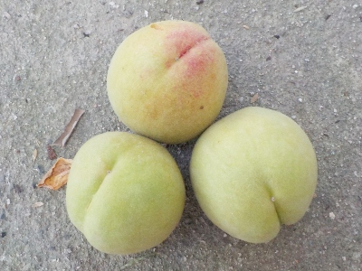
去年桃の収穫が遅くて失敗したので、今年は絶対6月中に収穫しようと思っていました。
なのでまだ硬いですが収穫しました。追熟で甘くなるのを期待します。
【桃TOP】
【果物TOP】
【園芸TOP】
2025/05/28
桃の挿し木はこれが最後の予定。
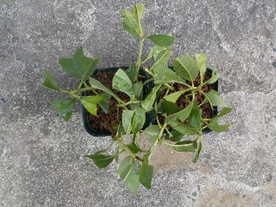
近頃桃の管理が面倒になりました。今年は袋掛けもしていません。只今虫だらけで実はほぼ食べられてるし、木自体も年数が経ってて弱っています。
なんか桃はもういいかなって思ってます。
この挿し木が失敗したら手間をかけるのは終了でいいかな。桃の木は花を見るだけでいいかな。
【桃TOP】
【果物TOP】
【園芸TOP】
2024/06/09
桃の挿し木は失敗しました。
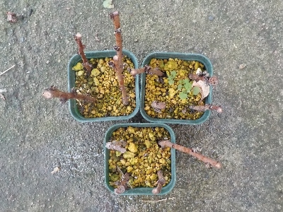
我が家の桃の木は原因不明で枝が枯れるようになりました。
そろそろ寿命かもしれない。
その日までに何かの方法で増やしたいです。
【桃TOP】
【果物TOP】
【園芸TOP】
2024/03/30
挿し木の桃が開花しました。
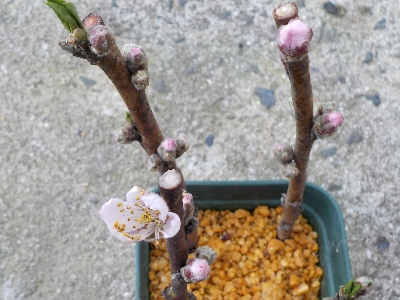
挿し木で花は邪魔なので、むしり取りました。
葉っぱが早く出てほしいな。
【桃TOP】
【果物TOP】
【園芸TOP】
2024/01/28
桃の剪定中に雨が降ったので挿し木しました。
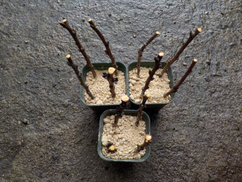
桃を剪定してたら雨が降ってきたのでちょっと休憩しました。
で、やることがなかったので切った枝を使って挿し木しました。
毎回失敗しているので、もうやらなくてもいいんじゃないかとも思いますが、楽しいのでやりました。
【桃TOP】
【果物TOP】
【園芸TOP】
2023/07/09
桃の収獲時期を間違えました。
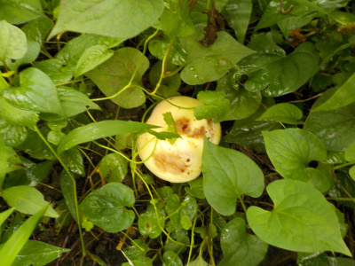
先週収穫すれば食べれたと思うんですが、もう傷んでて食べれません。
あーもったいない。
来年は6月末には収穫しよう。たぶん温暖化は進んでいるでしょう。
【桃TOP】
【果物TOP】
【園芸TOP】
2023/05/05
桃の袋掛けをしました。
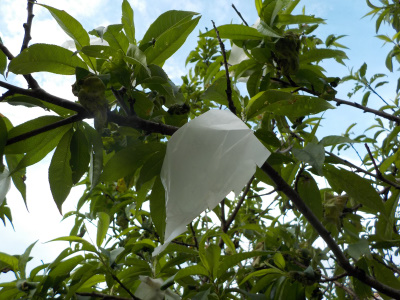
桃の木に枯れ枝が多くなりました。弱っています。
弱っているので袋掛けする実が少なかったです。
【桃TOP】
【果物TOP】
【園芸TOP】
2023/04/09
桃の挿し木はカビちゃったかな？
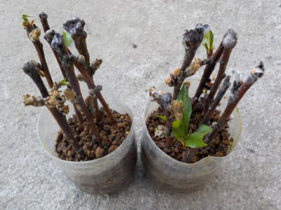
葉っぱが少しありますが、全体的に白くなりました。
今回もまた失敗かな。
【桃TOP】
【果物TOP】
【園芸TOP】
2023/04/01
桃の花が咲きました。
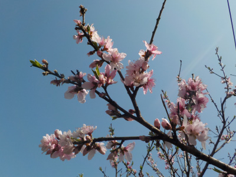
今年の桃の花はなんかいまいちです。
花色が薄いような、花が小さいような。
【桃TOP】
【果物TOP】
【園芸TOP】
2023/01/08
桃の挿し木をしました。
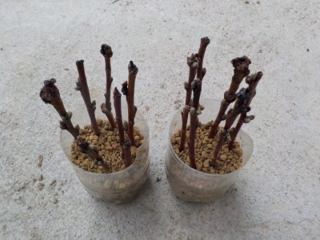
桃の剪定をしていましたが、雨が降ったので中止しました。
時間があったので剪定した枝で挿し木しました。
ペットボトルの挿し木をよくやっているので、今では手際よく出来るようになりました。
【桃TOP】
【果物TOP】
【園芸TOP】
2022/07/02
桃が美味しそうな色になりました。
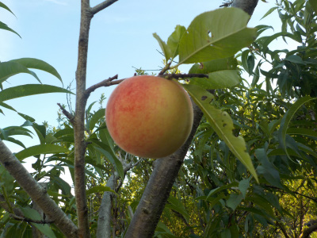
ちょっと固いですが、少し甘い匂いがしたので収獲しました。
ちょっと置いてから食べようと思います。
【桃TOP】
【果物TOP】
【園芸TOP】
2022/05/05
桃の袋にゾウムシが付いていました。
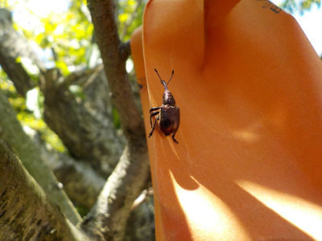
昨日袋かけした桃の袋にゾウムシが付いていました。昨日やっていなかったら穴を開けられていましたね。
袋かけする前に農薬を使うといいみたいですが、使わなくてもある程度は出来るので散布していません。
なのでゾウムシはうろうろしています。
【桃TOP】
【果物TOP】
【園芸TOP】
2022/05/04
桃に袋掛けをしました。
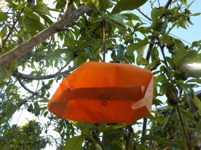
まだ桃の実は小さいですが、連休中に袋かけをしようと決めていました。
予定通り出来てよかった。
【桃TOP】
【果物TOP】
【園芸TOP】
以前の記事
2022/04/10
桃に害虫。
2021/07/18
桃の種を蒔きました。
2021/07/11
桃の袋にカエルと虫が集まっていました。
2021/07/10
桃を収穫しました。
2021/05/05
桃の袋掛けは小さいうちにやった方がいいですね。
2021/03/28
桃の花が咲きました。
2020/09/27
種を蒔いた桃が発芽しました。
2020/09/13
桃の挿し木がダメっぽいので、再チャレンジしました。
2020//08/13
時期じゃないとは思いますが、桃の挿し木をしました。
2020/07/26
桃の種を蒔きました。
2020/07/25
桃の種を採りました。
2020/07/18
桃を収獲しました。
2020/06/07
挿し木の桃に葉っぱがまだ残っています。
2020/02/15
桃の挿し木をしました。
2019/07/14
桃が不作でしたが、美味しいのが採れました。
2018/07/15
残った桃をまとめて収穫しました。
2018/05/26
桃に袋をかけました。
2016/05/15
桃の実が沢山付いてますけど。
2016/04/03
桃の花が満開です。
2013/03/31
桃の花は綺麗ですね。
【桃TOP】
【果物TOP】
【園芸TOP】
桃は美味しい。
【おいしいものを食べよう。】【たくさん寝よう。】
【ソロ活をしよう!】【季節感のあることをしよう。】【動画視聴はほどほどに。】【当サイトの全てのコンテンツは無断転載禁止です。】